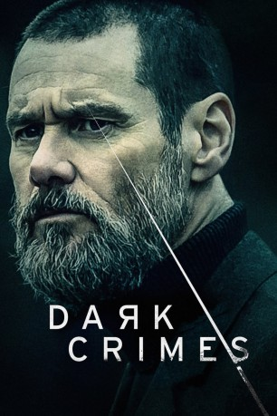

#11310 Dark Crimes
 
 IMDB-Wertung: 5.2 / 10
IMDB-Wertung: 5.2 / 10  Metascore: 24
Metascore: 24 
Dark Crimes befasst sich mit der Morduntersuchung eines getöteten Geschäftsmanns. Die Ermittlungen der Polizei laufen ins Leere. Ein Verdächtiger, der die Tat begangen hat, kann nicht gefunden werden, und damit wird der Fall vorerst auf Eis gelegt. Doch dann veröffentlicht der Schriftsteller Kozlow einen Kriminalroman, dessen Handlung auffällige Ähnlichkeiten mit dem Mord aufweist und dessen Beschreibung des Verbrechens Details enthält, die der Öffentlichkeit nie zugänglich gemacht wurden. Der Ermittler Tadek versucht daraufhin, den Autor seines Verbrechens zu überführen.
Jahr: 2016
Dauer: 92 Minuten
FSK: 16
Land: England Studio: Studio Hamburg EnterprisesTonspuren: DD5.1 - ,
Untertitel:
Auflösung: 1080p (1920x808) Größe: 3911 MB
Genre: Thriller, Drama, Krimi
Regisseur: Alexandros Avranas
Drehbuch: David Grann, Jeremy Brock
Soundtrack: Richard Patrick
Darsteller:
 Jim Carrey als Tadek
Jim Carrey als Tadek Marton Csokas als Kozlov
Marton Csokas als Kozlov Charlotte Gainsbourg als Kasia
Charlotte Gainsbourg als Kasia Kati Outinen als Mr. Malinowska
Kati Outinen als Mr. Malinowska- Robert Wieckiewicz als Greger
- Agata Kulesza als Marta
- Piotr Glowacki als Victor
 Zbigniew Zamachowski als Lukasz
Zbigniew Zamachowski als Lukasz Vlad Ivanov als
Vlad Ivanov als - Danuta Kowalska als
- Anna Polony als
- Piotr Stramowski als
- Kasia Warnke als
- Marcel Sabat als
- Anna Wendzikowska als
- Kasia Koleczek als
- Lukasz Garlicki als
- Pawel Okraska als
 Trinity L Beals als
Trinity L Beals als - Julia Gdula als
- Zygmunt Jozefczak als
- Marianna Figurska als
- Marcin Stec als
- Anna Moskal als
- Michal Kitlinski als
- Dominika Bednarczyk als
- Mateusz Dewera als
- Marta Kownacka als
- Piotr Kosiba als
- Maria Surzycka als
- Bartosz Waga als
- Marcin Molik als
- Pawel Janisiów als
- Malgorzata Krukowska als
- Lukrecja Nagabczynski als
- Wojciech Graniczewski als
- Kuba Rudzinski als
Datei: X:\2016(A-F)\Dark Crimes (2016, FSK16, 1920x808).mkv seit 18.06.2019
Festplatte: HD 2016(A-Z)
 Es gibt insgesamt 147 Filme in der Gruppe '2016(A-F)'
Es gibt insgesamt 147 Filme in der Gruppe '2016(A-F)'